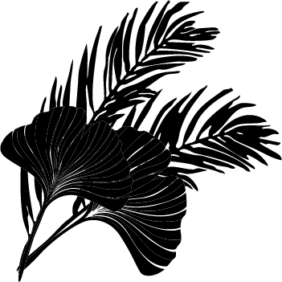
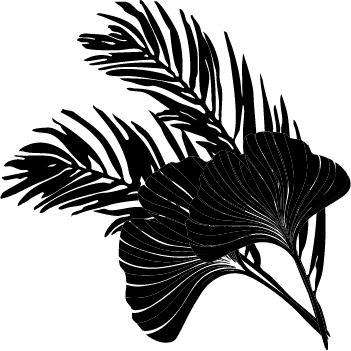

Established in 1993, Wildwynd Publishing has several decades of experience as a traditional publisher, and more recently as self-publishing service provider. Amongst our clientele, we have established a reputation for attention to detail, and high quality products. Our portfolio features a broad range of fiction and non-fiction titles, reflecting the company's dedication to honouring diversity, and to embracing alternative forms of storytelling and study.
Our staff is nearly as diverse as our customers, and our network of distributors. But we all have one thing in common. All of us have been first time authors ourselves. We know what it's like to face the challenge of getting that dream fleshed out on paper, and putting it out there into the world. That is why the most important people on our team are the authors!
Find out how cover and page design makes a good story even better for readers.
Learn how our network of printers and distributors gets your book into the hands of readers everywhere.
Arjun Mehta is the Creative Director at Wildwynd Publishing. He leads the overall creative direction of our projects. With a background in digital media and storytelling, he works closely with editors, designers, and authors to turn ideas into meaningful publications. He focuses on making sure each project has a strong narrative structure while also looking visually appealing and professional.
Before joining Wildwynd, Arjun worked on independent publishing and multimedia projects that explored storytelling and design together. These experiences shaped his belief that publishing should support diverse voices and continue evolving alongside modern digital media. In his role, Arjun helps guide projects from early concept stages through to the final design. He values teamwork and believes the best creative work happens when everyone collaborates. He also ensures the studio maintains a consistent visual identity while still allowing each publication to have its own unique voice.


Find out how we turn sketches and rough drafts into a polished masterpiece.
Sofia Alvarez is the Senior Editor at Wildwynd Publishing. She oversees the editorial development of all our publications. Her role includes guiding manuscripts through the editing process and helping authors strengthen their ideas while keeping their original voice intact. She is known for being detail-oriented and collaborative, and she plays an important role in shaping manuscripts into polished pieces.
Sofia works across many different genres, with a special love for poetry, literary fiction, and children's fantasy. She believes editing is more than just correcting grammar. It's about improving structure, clarity, and emotional impact. By working closely with writers, she helps turn early drafts into cohesive and engaging stories. She is passionate about supporting emerging writers and encouraging creative storytelling. Sofia believes thoughtful editing helps writers communicate their ideas more clearly and ensures their stories appeal to the right audience.
Learn how we help connect authors with their audience, and turn readers into fans.
Omar Rahman is the Marketing and Outreach Manager at Wildwynd Publishing. He focuses on promoting our authors and publications, and connecting them with readers. His role includes creating marketing strategies, managing digital campaigns, and engaging with audiences through social media and other platforms.
Omar sees marketing as another form of storytelling. He believes that promoting a publication should reflect the authenticity of the work itself. By researching audience interests and paying attention to media trends, he designs campaigns that help books gain visibility, while still respecting the artistic vision behind them. He believes marketing should build real connections between writers and readers, helping stories to reach beyond the page.